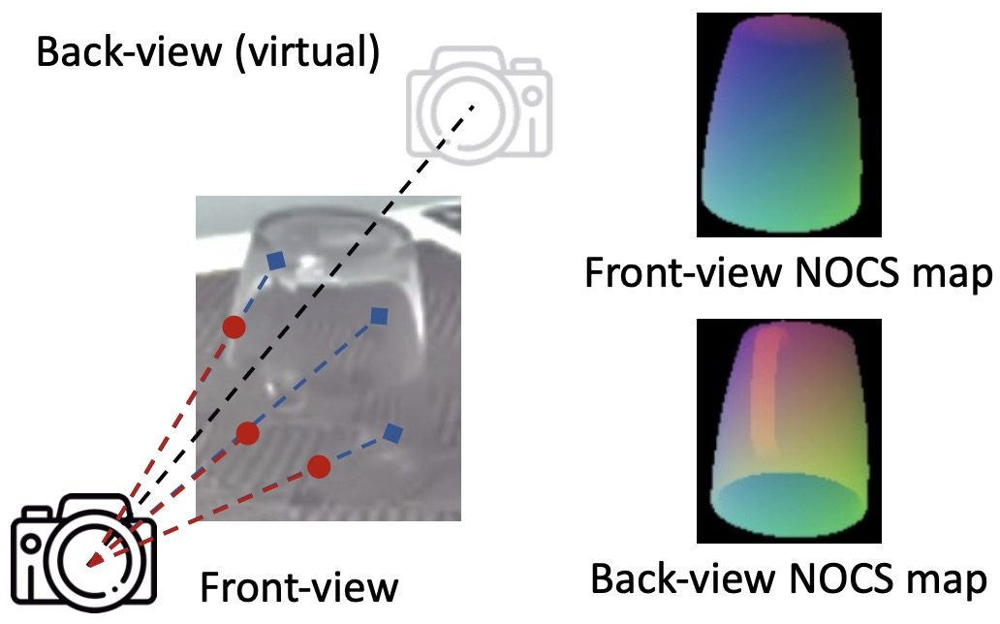
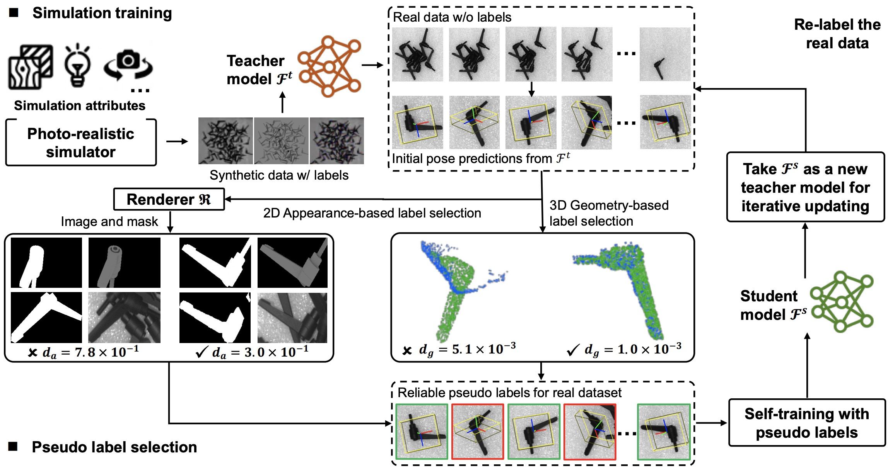
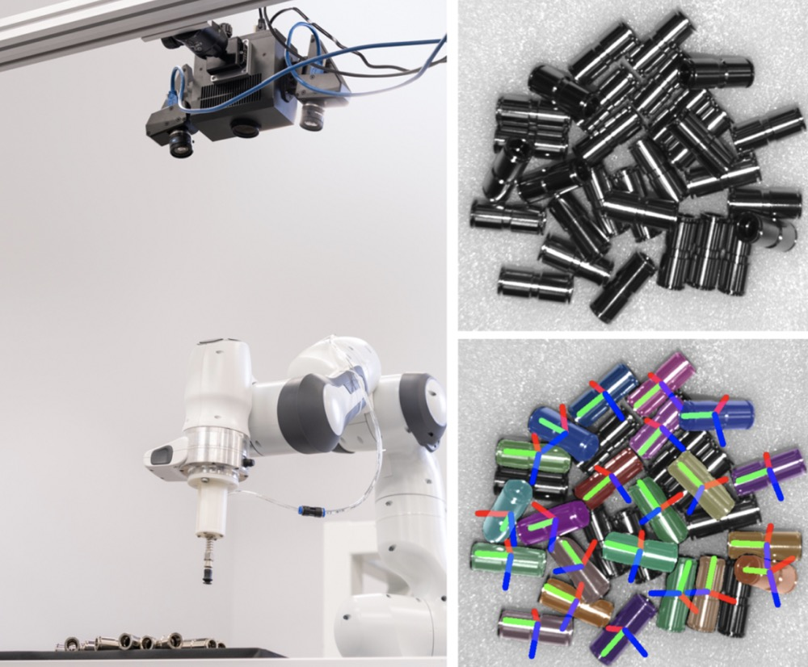
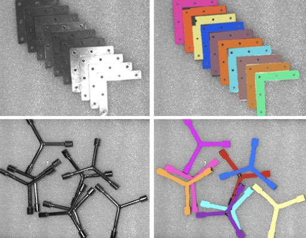
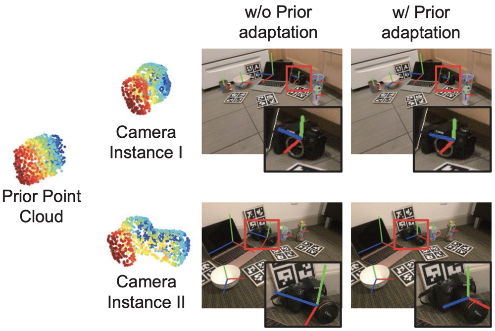
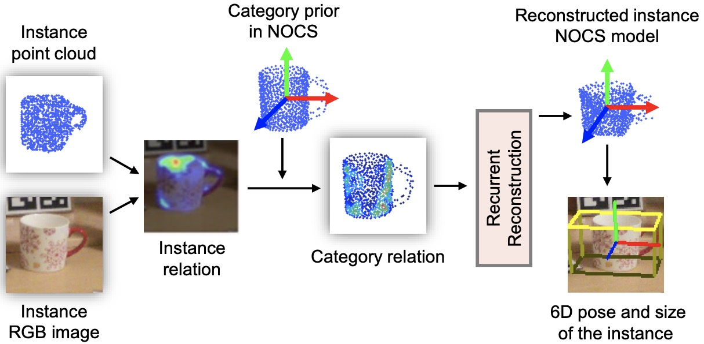

|
|
Kai Chen
Ph.D. Student
Department of Computer Science and Engineering
The Chinese University of Hong Kong
Office: Room 1024, Ho Sin-Hang Engineering Building
Email: kaichen [at] cse.cuhk.edu.hk


|
Short Bio
Recent Publications
|

|
StereoPose: Category-Level 6D Transparent Object Pose Estimation from Stereo Images via Back-View NOCS
Kai Chen, Stephen James, Congying Sui, Yun-Hui Liu, Pieter Abbeel, Qi Dou.
ArXiv, 2022.
[paper] [project]
|
|

|
Sim-to-Real 6D Object Pose Estimation via Iterative Self-training for Robotic Bin Picking
Kai Chen, Rui Cao, Stephen James, Yichuan Li, Yun-Hui Liu, Pieter Abbeel, Qi Dou.
European Conference on Computer Vision (ECCV), 2022.
[paper] [project]
|
|

|
A Sim-to-Real Object Recognition and Localization Framework for Industrial Robotic Bin Picking
Xianzhi Li, Rui Cao, Yidan Feng, Kai Chen, Biqi Yang, Chi-Wing Fu, Yichuan Li, Qi Dou, Yun-Hui Liu, Pheng-Ann Heng.
IEEE Robotics and Automation Letters (RA-L), 2022.
[paper]
|
|

|
Towards Robust Part-aware Instance Segmentation for Industrial Bin Picking
Yidan Feng, Biqi Yang, Xianzhi Li, Chi-Wing Fu, Rui Cao, Kai Chen, Qi Dou, Mingqiang Wei, Yun-Hui Liu, Pheng-Ann Heng.
International Conference on Robotics and Automation (ICRA), 2022.
[paper]
|
|

|
SGPA: Structure-Guided Prior Adaptation for Category-Level 6D Object Pose Estimation
Kai Chen, Qi Dou.
IEEE/CVF International Conference on Computer Vision (ICCV), 2021.
(Oral)
[paper] [project]
|
|

|
Category-level 6D Object Pose Estimation via Cascaded Relation and Recurrent Reconstruction Networks
Jiaze Wang*, Kai Chen*, Qi Dou.
IEEE/RSJ International Conference on Intelligent Robots and Systems (IROS), 2021.
[paper] [project]
|
Miscellaneous
|
Professional Activities
IEEE/CVF Conference on Computer Vision and Pattern Recognition (CVPR) 2023.
European Conference on Computer Vision (ECCV) 2022.
International Conference on Robotics and Automation (ICRA) 2022.
IEEE/RSJ International Conference on Intelligent Robots and Systems (IROS) 2021, 2022.
IEEE Transactions on Image Processing (TIP).
IEEE Transactions on Multimedia (TMM).
IEEE Robotics and Automation Letters (RA-L)
|
|